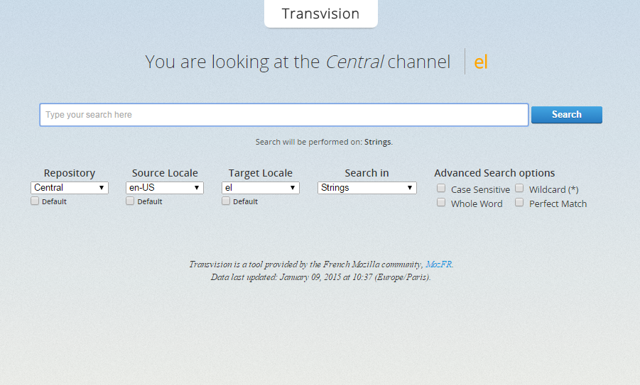

MozCoffee SKG#3
Aims to adapt the software to seem as if it was originally created for the user's region.
I tried to help Armenian localizers so my grandfather could use Firefox in Armenian.
Minority languages need a presence on the Web so their speakers can express themselves.
Now I can give something back to Mozilla.
Contributing to an open source project was my way of having an impact.
| L10n Drivers | L10n Teams | Rapid release |
|---|---|---|
| Tools | Localization | Smaller workloads |
| Guidance | Repo maintenance | |
| Documentation | Represent Mozilla | |
| Infrastructure | Productize | |
| Advocate | Advocate |
Wen based WYSIYG tool used to translate website content.
In Mozilla we use it to localize our websites and Gaia.
Web based tool used to translate software and website content.
In Mozilla we use it to translate software like Firefox, Thunderbird and services like AMO, Marketplace, Firefox Hello, Persona etc
Search engine of Mozilla repos, created by the French community.
Helps in maintaining string consistency between projects.
The easiest way to get started is translating articles in Mozilla Support. All you have to do is create an account and start translating immediately.
You can start whenever you want, and involve as much as you want. There are no commitments
We could really use your help ;)